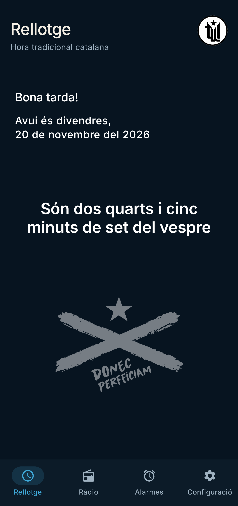
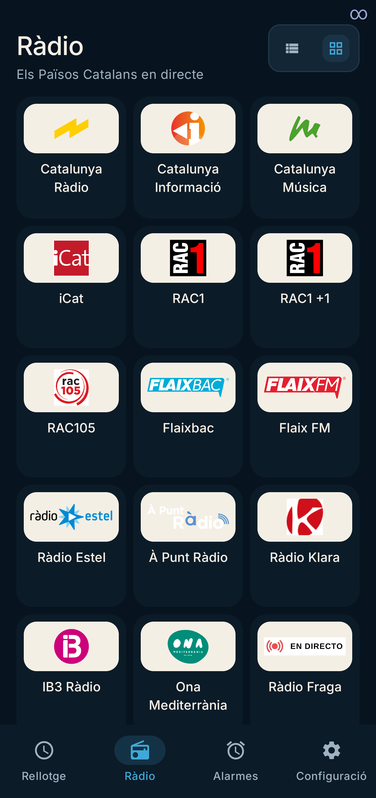
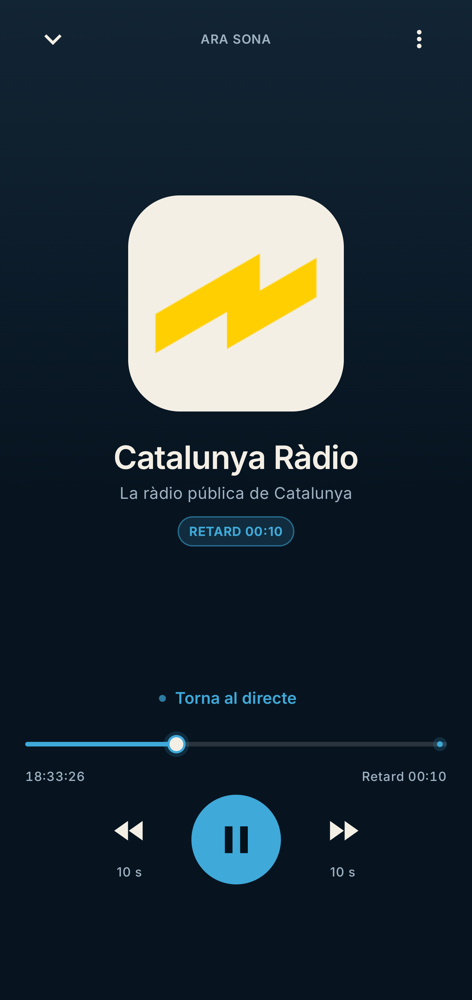
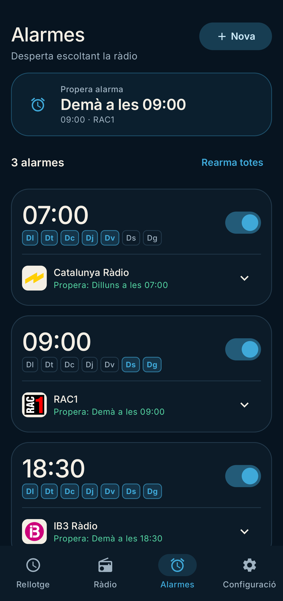

Una app lliure per a Android
És un quart de set.
L’hora en català, tal com la diem.
Vaig fer cronos per tenir a mà la manera tradicional de dir l’hora. També hi pots escoltar ràdio en català, posar el despertador amb l’emissora que triïs i veure l’hora en un giny a la pantalla d’inici.
Android 8.0 o superior · Sense anuncis ni comptes

Ràdio i despertador
Escolta la ràdio amb la pantalla apagada. Si l’emissora no es pot reproduir a l’hora de despertar-te, l’alarma pot fer servir un to local.


